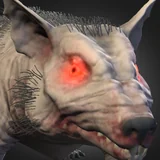

Star upgrades
Combining copies, star scaling and sell values.
Units come in 3 star levels. Every unit is bought as a 1 star. Owning 3 copies of the same unit at the same star combines them into one unit of the next star, up to 3 star. A higher star has more health and hits harder, and most abilities grow with it.
Copies needed
| Star | Made from | Shop copies in total |
|---|---|---|
| 1 star | bought in the shop | 1 |
| 2 star | 3 copies at 1 star | 3 |
| 3 star | 3 copies at 2 star | 9 |
3 star is the highest star. A finished unit cannot be combined further, and the shop stops offering you that unit while you own it. How many players can finish the same unit is limited by the shared pool.
Where the copies may be
- Copies on the board and the bench both count, in any mix, whenever your board is open: during preparation, and during combat once your own fight has ended.
- While your fight is still running, your board is locked and only bench copies count. A copy you buy then waits on the bench next to the ones on the board.
- Copies must be the same unit at the same star. 3 copies at different stars do not combine.
- The commander and summoned units never combine.
When a combine happens
- Combining is automatic and immediate. It is checked every time you buy a unit and every time you move or swap units, and for every player when a round ends and again when preparation starts.
- If the unit you are buying completes a set, it combines as part of the purchase and never needs a slot of its own. That is why you can buy the last copy with a full bench.
- Combines chain. If making a 2 star gives you 3 of them, they combine straight away as well.
- Copies held apart by a locked board (some on the board, a new one on the bench, your fight still running) combine at your next purchase or move after your fight ends, or when the round ends, whichever comes first. The combine at the end of the round happens before the new shop is rolled.
- The combined unit stays where a board copy stood. If no copy was on the board it stays in the first bench slot that held one. The other copies are removed, bench copies before board copies.
- The combined unit keeps its own item. If it had none it takes one from a copy that was used up. Any further items go back to your inventory.
What a star changes
Health and attack damage grow with the star. As a multiple of the 1 star value, taken over every unit in the shop: Tiers 1, 2, 4 and 5: health and attack damage are x2 at 2 star and x4 at 3 star. Tier 3: health and attack damage are x2 at 2 star and x4.8 at 3 star.
| Tier | Example | Health per star | Attack damage per star |
|---|---|---|---|
| Tier 1 Common |  Gutter Scavenger | 1,100 / 2,200 / 4,400 | 50 to 60 / 100 to 120 / 200 to 240 |
| Tier 2 Uncommon |  Chainwarden Chainwarden | 1,650 / 3,300 / 6,600 | 45 to 55 / 90 to 110 / 180 to 220 |
| Tier 3 Rare |  Ashen Abbess Ashen Abbess | 1,125 / 2,250 / 5,400 | 45 to 55 / 90 to 110 / 216 to 264 |
| Tier 4 Epic |  Storm Augur Storm Augur | 1,000 / 2,000 / 4,000 | 54 to 60 / 108 to 120 / 216 to 240 |
| Tier 5 Legendary |  Spire Colossus Spire Colossus | 3,000 / 6,000 / 12,000 | 50 to 60 / 100 to 120 / 200 to 240 |
Stats that change with the star on at least one unit: health, minimum attack damage, maximum attack damage. Stats that are the same at every star on every unit: attack interval, attack point, attack range, armour, magic resistance, maximum mana, movement speed, projectile speed. Each unit's page lists its exact numbers per star, and the Unit stat table shows them side by side. What each stat does is on Stat reference.
- Ability values usually grow per star as well. They are listed on each ability page.
- Stars do not change which alliances a unit counts for, and a higher star still counts as one unit toward your unit cap.
A unit that survives a won fight deals damage to the losing player, and a higher star can deal more. Not every star step adds damage, as the table shows. See Player damage and elimination for the whole sum.
| Tier | 1 star | 2 star | 3 star |
|---|---|---|---|
| Tier 1 Common | 1 | 2 | 2 |
| Tier 2 Uncommon | 1 | 2 | 3 |
| Tier 3 Rare | 2 | 2 | 3 |
| Tier 4 Epic | 2 | 3 | 3 |
| Tier 5 Legendary | 2 | 3 | 4 |
Sell value
A unit sells for the price of one copy of its tier, plus a bonus for its star: +2 for a 2 star, +4 for a 3 star. A 1 star therefore sells for exactly what it cost, so buying a unit to hold it for a round and selling it again is free. Higher stars return much less than the copies cost.
| Tier | Price | 2 star sells for | 2 star cost to make | 3 star sells for | 3 star cost to make |
|---|---|---|---|---|---|
| Tier 1 Common | 1 | 3 | 3 | 5 | 9 |
| Tier 2 Uncommon | 2 | 4 | 6 | 6 | 18 |
| Tier 3 Rare | 3 | 5 | 9 | 7 | 27 |
| Tier 4 Epic | 4 | 6 | 12 | 8 | 36 |
| Tier 5 Legendary | 5 | 7 | 15 | 9 | 45 |
- Selling returns the unit's copies to the shared pool: 1 from a 1 star, 3 from a 2 star, 9 from a 3 star.
- A unit on the bench can be sold at any time. A unit on the board can be sold while the board is open: in preparation, or in combat after your own fight has ended.
- An item on a sold unit goes back to your inventory.
- The commander cannot be sold.
- Gold from a sale counts toward the gold cap of 100; anything above it is lost. See Gold and income.
See also
The shop, The shared pool, Aces, Board and bench, Stat reference, Unit stat table